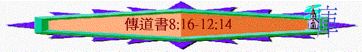

|
人
生 的 意 義 |
|||
|
引言 |
勞碌的價值 |
意義的人生 |
總結 |
|
1:1 |
1:1-6:12 |
7:1-12:7 |
12:8-14 |
4.智慧的局限(8:16-10:20)
〜前文題及人有智慧，有很多福份及啟發，但若認真考究，智慧仍有它的局限
A.有所不知(8:16-9:1)
「我就看明神一切的作為，知道人查不出日光之下所做的事；任憑他費多少力尋查，都查不出來，就是智慧人雖想知道，也是查不出來。」8:17
「我將這一切事放在心上，詳細考究，就知道義人和智慧人，並他們的作為都在神手中；或是愛，或是恨，都在他們的前面，人不能知道。」9:1
「神造萬物，各按其時成為美好，又將永生（原文作永遠）安置在世人心裡。然而神從始至終的作為，人不能參透。」3:11
a.神掌管一切
〜義人與智慧人的人生都在神手中，神有祂的旨意、美意
b.人不能猜測
〜人算甚麼，如何能知道神為人安排的一切之事呢？這是智慧的局限！
B.沒有分別(9:2-10)
a.與愚昧人沒有分別
「凡臨到眾人的事都是一樣：義人和惡人都遭遇一樣的事；好人，潔淨人和不潔淨人，獻祭的與不獻祭的，也是一樣。好人如何，罪人也如何；起誓的如何，怕起誓的也如何。」9:2
(1)一樣充滿惡
「在日光之下所行的一切事上有一件禍患，就是眾人所遭遇的都是一樣，並且世人的心充滿了惡；活著的時候心裡狂妄，後來就歸死人那裡去了。」9:3
(2)一樣遇見死
(3)一樣沒人念
「活著的人知道必死；死了的人毫無所知，也不再得賞賜；他們的名無人記念。他們的愛，他們的恨，他們的嫉妒，早都消滅了。在日光之下所行的一切事上，他們永不再有分了。」9:5-6
b.因而帶出之啟發—享受勞承得來的福份
(1)關乎飲食
「你只管去歡歡喜喜吃你的飯，心中快樂喝你的酒，因為神已經悅納你的作為。」9:7
(2)關乎衣著
「你的衣服當時常潔白，你頭上也不要缺少膏油。」9:8
(3)關乎伴侶
「在你一生虛空的年日，就是神賜你在日光之下虛空的年日，當同你所愛的妻，快活度日，因為那是你生前在日光之下勞碌的事上所得的分。」9:9
(4)關乎工作
「凡你手所當做的事要盡力去做；因為在你所必去的陰間沒有工作，沒有謀算，沒有知識，也沒有智慧。」9:10
〜飲食、衣著、家庭、工作過程，是勞碌得來的，既然死後甚麼也沒有，倒不如享受人在神面前蒙悅納工作之果效，這是我們的分！
C.未必亨通(9:11-12)
〜有智慧的人終久可能得福，但在過程中，可能仍然不亨通：
「我又轉念：見日光之下，快跑的未必能贏；力戰的未必得勝；智慧的未必得糧食；明哲的未必得資財；靈巧的未必得喜悅。所臨到眾人的是在乎當時的機會。」9:11
a.
不得勝利
b.
不得糧食
c.
不得貲財
d.
不蒙喜悅
D.沒被尊重(9:12-16)
a.
雖有能力
「我見日光之下有一樣智慧，據我看乃是廣大，就是有一小城，其中的人數稀少，有大君王來攻擊，修築營壘，將城圍困。城中有一個貧窮的智慧人，他用智慧救了那城，卻沒有人記念那窮人。」9:13-15
b.不被肯定
「我就說，智慧勝過勇力；然而那貧窮人的智慧被人藐視，他的話也無人聽從。」9:16
E.被人敗壞
「智慧勝過打仗的兵器；但一個罪人能敗壞許多善事。死蒼蠅使做香的膏油發出臭氣；這樣，一點愚昧也能敗壞智慧和尊榮。」9:18-10:1
「我見日光之下有一件禍患，似乎出於掌權的錯誤，就是愚昧人立在高位；富足人坐在低位。」10:5-6
「邦國啊，你的王若是孩童，你的群臣早晨宴樂，你就有禍了！」10:16
〜此段講到國家事情，國家雖有智慧人，但愚昧人的出現，可以敗壞許多善事！
a.智慧領袖的建立
(1)爭戰佔優
「智慧勝過打仗的兵器；但一個罪人能敗壞許多善事。」9:18
(2)判斷正確
「智慧人的心居右；愚昧人的心居左。」10:2
〜人的心是偏左，但智慧人在偏左中卻屬右，這樣心更正，更在中間，代表他判斷更公正
(3)能免禍患
「掌權者的心若向你發怒，不要離開你的本位，因為柔和能免大過。」10:4
「你不可咒詛君王，也不可心懷此念；在你臥房也不可咒詛富戶。因為空中的鳥必傳揚這聲音，有翅膀的也必述說這事。」10:20
(4)國家之福
「邦國啊，你的王若是貴冑之子，你的群臣按時吃喝，為要補力，不為酒醉，你就有福了！」10:17
〜若群臣不是受宴樂，不醉酒，這是按時吃所需，他們必不懶惰放縱，更有效專心治國實乃國家之福
b.愚昧帶領的拆毀
(1)判斷偏差
「智慧人的心居右；愚昧人的心居左。」10:2
〜人的心已是在左邊，若更偏左，代表心更歪，判斷更偏私
(2)顯出無知
「並且愚昧人行路顯出無知，對眾人說，他是愚昧人。」10:3
(3)吞滅自己
「智慧人的口說出恩言；愚昧人的嘴吞滅自己。他口中的言語起頭是愚昧；他話的末尾是奸惡的狂妄。」10:12-13
(4)浪費勞力
「凡愚昧人，他的勞碌使自己困乏，因為連進城的路，他也不知道。」10:15
(5)國家之禍
「邦國啊，你的王若是孩童，你的群臣早晨宴樂，你就有禍了！」10:16
「因人懶惰，房頂塌下；因人手懶，房屋滴漏。設擺筵席是為喜笑。酒能使人快活；錢能叫萬事應心。」10:18-19
「死蒼蠅使做香的膏油發出臭氣；這樣，一點愚昧也能敗壞智慧和尊榮。」10:1
〜若國家由愚昧人統領，他們沉醉享樂，用金錢滿足自己內心慾望，不勤奮治國，國家的尊榮，昔日智慧人所建立的也遭敗壞！
5.至終的出路(11:1-12:7)
〜雖然智慧有它的局限，但不是沒有出路，在限制中可活得不枉此生！
A.在不知道中要預備(11:1-8)
a.許多的不知道
「風從何道來，骨頭在懷孕婦人的胎中如何長成，你尚且不得知道；這樣，行萬事之神的作為，你更不得知道。」11:5
「人活多年，就當快樂多年；然而也當想到黑暗的日子。因為這日子必多，所要來的都是虛空。」11:8
〜人生許多事，我們都不知，不知明天如何，或許是黑暗，或許遇災禍……
b.及早的要預備
(1)努力作工
「早晨要撒你的種，晚上也不要歇你的手，因為你不知道哪一樣發旺；或是早撒的，或是晚撒的，或是兩樣都好。」11:6
(2)行善賙濟
「你要分給七人，或分給八人，因為你不知道將來有什麼災禍臨到地上。」11:2
〜或許明天會有災禍，一切都會失去，倒不如將所有施予其他人
〜而當你在困難時，你曾經幫助的人，也許會幫助你
B.在未衰敗時當敬神(11:9-12:7)
a.可快樂
「少年人哪，你在幼年時當快樂。在幼年的日子，使你的心歡暢，行你心所願行的，看你眼所愛看的；卻要知道，為這一切的事，神必審問你。」11:9
〜人到老時，至終可能不得享福，而且明天的日子或許未必得亨通，倒不如在少年黃金歲月時快樂！
b.要儆醒
「少年人哪，你在幼年時當快樂。在幼年的日子，使你的心歡暢，行你心所願行的，看你眼所愛看的；卻要知道，為這一切的事，神必審問你。所以，你當從心中除掉愁煩，從肉體克去邪惡；因為一生的開端和幼年之時，都是虛空的。」11:9-10
〜愚昧人似乎敗壞了很多善事，愚昧人或許單單一生享受，不作工，但有一日神會審問一切事！
〜所以智慧人在享福中，要儆醒，我們要向神交賬的，當除掉邪惡，令你所捆綁，感苦惱的罪，在幼年一生之開端日子當儆醒！
c.當記主
「你趁著年幼、衰敗的日子尚未來到，就是你所說，我毫無喜樂的那些年日未曾臨近之先，當記念造你的主。不要等到日頭、光明、月亮、星宿變為黑暗，雨後雲彩反回，」12:1-2
「塵土仍歸於地，靈仍歸於賜靈的神。」12:7
〜有一日，我們和世人一樣，都要走上人生最後一站----衰敗至死亡，找們的靈是會歸向神的，是要見主的！
〜因此，趁著我們年幼未衰敗的日子，我們仍可有力想念主，為主熱心時，當要盡力記念主，愛祂，敬祂，事奉祂！
〜否則到老時，很多事情已忘記，已沒有力量，又如何記念神，事奉神呢？
總結(12:8-14)
1.本書兩個重要方向
A.凡事都是虛空
「傳道者說：「虛空的虛空，凡事都是虛空。」12:
B.人生仍要智慧
a.智慧的傳遞
「再者，傳道者因有智慧，仍將知識教訓眾人；又默想，又考查，又陳說許多箴言。傳道者專心尋求可喜悅的言語，是憑正直寫的誠實話。智慧人的言語好像刺棍；會中之師的言語又像釘穩的釘子，都是一個牧者所賜的。我兒，還有一層，你當受勸戒：著書多，沒有窮盡；讀書多，身體疲倦。」12:9-12
b.智慧的益處
(1)給人提醒
〜如剌棍般深刻，卻令人有儆醒，醒覺，不走愚昧人的路！
(2)人穩妥
〜如釘穩的釘子，令人不易隨從邪惡，使人站穩
2.本書一個主要目的
「這些事都已聽見了，總意就是：敬畏神，謹守他的誡命，這是人所當盡的本分（或作：這是眾人的本分）。」12:13
A.敬神的原因
a.人的有限
「我兒，還有一層，你當受勸戒：著書多，沒有窮盡；讀書多，身體疲倦。」12:12
〜強如智慧，也因人的有限(會疲乏，有些事不能測)而有所不足，所以有限的人，在日光之下看到很多局限，更應對這位無限神，產生敬畏的心！
b.至終見神
「因為人所做的事，連一切隱藏的事，無論是善是惡，神都必審問。」12:14
〜人會死，會終結，我們有一日會見神，所作的神必審問
B.敬神的表現----謹守祂的誡命
〜這是人生最大的意義，人活著的意義！
〜聖經說人活著不是單靠食物，乃是靠神口�堜狴X的話
〜耶穌說他的食物，就是遵行差祂來者的旨意，另外，天地也要廢去，也都會虛空，但神的話卻永遠長存！
〜在勞碌中，人莫強如吃喝，但真正使人感到滿足，使人活得積極，喜樂，可以存到永遠，可以在神面前無愧，坦然交賬的是謹守祂的話(祂的誡命)，敬神的人，自然會守祂的話，這也是傳道書主要的方向，既然日光之下皆虛空，我們也用智慧看到人會死，人要向神交賬！我們當追求永恆的事----敬畏祂，謹守祂的話！
〜此乃人當盡本分，乃人生的滿足，人生的意義！